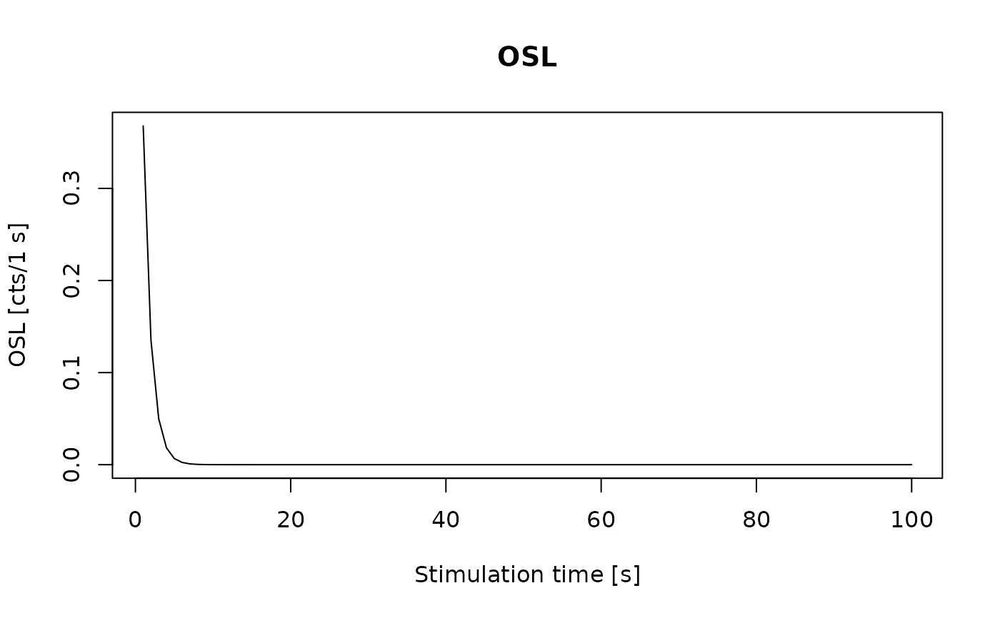

General setter function for RLum-class objects
Source:R/Luminescence-generics.R, R/RLum.Analysis-class.R, R/RLum.Data.Curve-class.R, and 3 more
set_RLum.RdThe function provides a generalised access point for specific RLum objects. Depending on the given class, the corresponding method to create an object from this class will be selected.
Usage
set_RLum(class, originator, .uid = create_UID(), .pid = NA_character_, ...)
# S4 method for class 'RLum.Analysis'
set_RLum(
class,
originator,
.uid,
.pid,
protocol = NA_character_,
records = list(),
info = list()
)
# S4 method for class 'RLum.Data.Curve'
set_RLum(
class,
originator,
.uid,
.pid,
recordType = NA_character_,
curveType = NA_character_,
data = matrix(0, ncol = 2),
info = list()
)
# S4 method for class 'RLum.Data.Image'
set_RLum(
class,
originator,
.uid,
.pid,
recordType = "Image",
curveType = NA_character_,
data = array(),
info = list()
)
# S4 method for class 'RLum.Data.Spectrum'
set_RLum(
class,
originator,
.uid,
.pid,
recordType = "Spectrum",
curveType = NA_character_,
data = matrix(),
info = list()
)
# S4 method for class 'RLum.Results'
set_RLum(class, originator, .uid, .pid, data = list(), info = list())Arguments
- class
character (required): name of the S4 class to create, must correspond to one of the RLum classes.
- originator
character (automatic): contains the name of the calling function (the function that produces this object); can be set manually.
- .uid
character (automatic): unique ID for this object, by default set using the internal C++ function
create_UID.- .pid
character (with default): option to provide a parent id for nesting at will.
- ...
further arguments passed to the specific class method
- protocol
character (optional): sets protocol type for analysis object. Value may be used by subsequent analysis functions.
- records
list (optional): list of RLum.Analysis objects
- info
list (optional): a list containing additional info data for the object.
- recordType
character (optional): record type (e.g., "OSL")
- curveType
character (optional): curve type (e.g., "predefined" or "measured")
- data
matrix or list (with default): a matrix containing raw curve data or a list containing the data to be stored in the object (for RLum.Results objects) . If
dataitself is aRLum.Data.Curve-object this can be used to re-construct the object, i.e. modified parameters except.uid,.pidandoriginator. The rest will be subject to copy and paste unless provided.
Value
An object of the specified RLum class.
Functions
set_RLum(RLum.Analysis): Construction method for RLum.Analysis objects.set_RLum(RLum.Data.Curve): Construction method for RLum.Data.Curve objects.set_RLum(RLum.Data.Image): Construction method for RLum.Data.Image objects.set_RLum(RLum.Data.Spectrum): Construction method for RLum.Data.Spectrum objects.set_RLum(RLum.Results): Construction method for RLum.Results objects.
Author
Sebastian Kreutzer, Institute of Geography, Heidelberg University (Germany) , RLum Developer Team
How to cite
Kreutzer, S., 2025. set_RLum(): General setter function for RLum-class objects. Function version 0.3.0. In: Kreutzer, S., Burow, C., Dietze, M., Fuchs, M.C., Schmidt, C., Fischer, M., Friedrich, J., Mercier, N., Philippe, A., Riedesel, S., Autzen, M., Mittelstrass, D., Gray, H.J., Galharret, J., Colombo, M., Steinbuch, L., Boer, A.d., 2025. Luminescence: Comprehensive Luminescence Dating Data Analysis. R package version 1.1.2. https://r-lum.github.io/Luminescence/
Examples
## produce empty objects from each class
set_RLum(class = "RLum.Data.Curve")
#>
#> [RLum.Data.Curve-class]
#> recordType: NA
#> curveType: NA
#> measured values: 1
#> .. range of x-values: 0 0
#> .. range of y-values: 0 0
#> additional info elements: 0
set_RLum(class = "RLum.Data.Spectrum")
#>
#> [RLum.Data.Spectrum-class]
#> recordType: Spectrum
#> curveType: NA
#> .. recorded frames: 1
#> .. .. measured values per frame: 1
#> .. .. range wavelength/pixel: Inf -Inf
#> .. .. range time/temp.: Inf -Inf
#> .. .. range count values: NA NA
#> additional info elements: 0
set_RLum(class = "RLum.Data.Spectrum")
#>
#> [RLum.Data.Spectrum-class]
#> recordType: Spectrum
#> curveType: NA
#> .. recorded frames: 1
#> .. .. measured values per frame: 1
#> .. .. range wavelength/pixel: Inf -Inf
#> .. .. range time/temp.: Inf -Inf
#> .. .. range count values: NA NA
#> additional info elements: 0
set_RLum(class = "RLum.Analysis")
#>
#> [RLum.Analysis-class]
#> originator: eval()
#> protocol: NA
#> additional info elements: 0
#> number of records: 0
#> >> This is an empty object, which cannot be used for further analysis! <<
set_RLum(class = "RLum.Results")
#>
#> [RLum.Results-class]
#> originator: eval()
#> data: 0
#> .. $ : list
#> additional info elements: 0
## produce a curve object with arbitrary curve values
object <- set_RLum(
class = "RLum.Data.Curve",
curveType = "arbitrary",
recordType = "OSL",
data = matrix(c(1:100,exp(-c(1:100))),ncol = 2))
## plot this curve object
plot_RLum(object)
